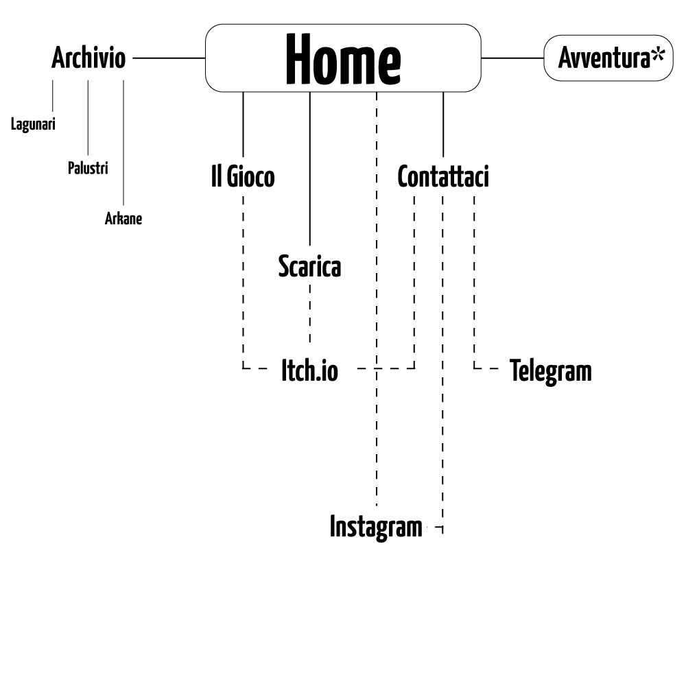
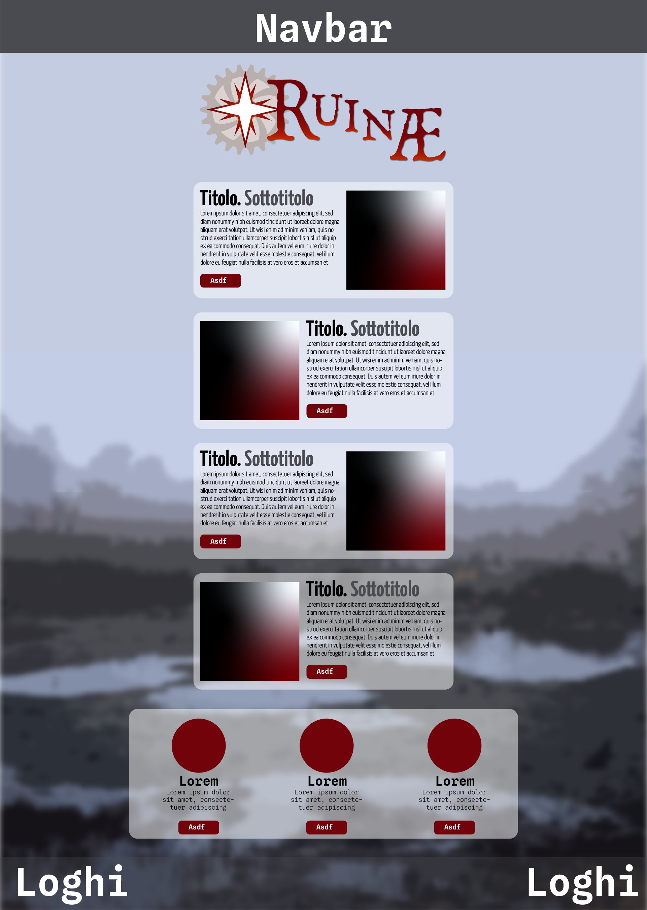
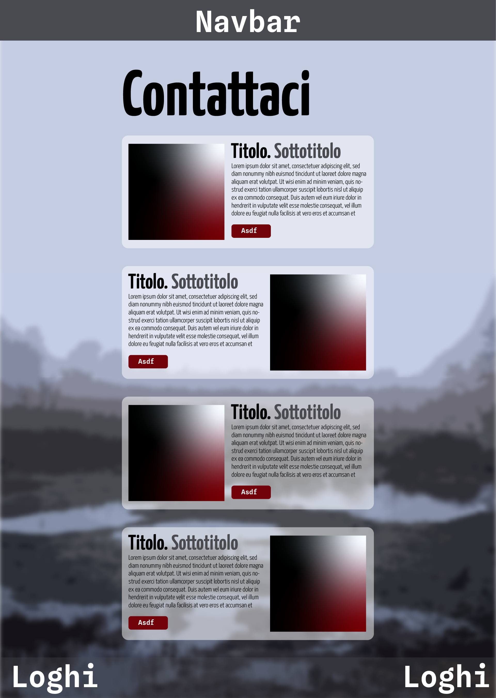

Documentazione
Abstract
Il sito web di Ruinae è una piattaforma di pubblicazione e pubblicizzazione dell’omonimo TTRPG, nodo centrale dei nostri canali social, e vetrina per i progressi fatti. Vogliamo condividere questa nostra creazione con altri giovani appassionati di GDR da tavolo, usando il sito per facilitare la consultazione e il download dei contenuti creati finora.
Project Management Plan
Benchmarking. L’obiettivo primario è di pubblicare e pubblicizzare tramite questo sito il gioco di ruolo da tavolo Ruinae, fornire tutte le risorse necessarie per permettere di giocare a più persone possibili; creare immersione nel mondo di Ruinae. Il sito vuole essere una vetrina per il gioco, un portale per le piattaforme su cui operiamo (instagram, itch.io, telegram) e un archivio di worldbuilding (pagina archivio, avventura).
Il target primario sono gli italiani under 30 appassionati di giochi di ruolo o che vorrebbero approcciarsi per la prima volta a GDR.
Tra i competitor abbiamo preso in considerazione Stillfleet (un gdr in inglese grimdark sci-fi), Mausritter (GDR multilingua a tema fantasy, ambientato in un mondo di roditori) e Ingranaria (un GDR italiano steampunk). Da Stillfleet e Mausritter abbiamo preso ispirazione, in particolare per quanto riguarda la caratterizzazione, il progetto grafico unitario e l’organizzazione del sito web.
Struttura e layout
Struttura del sito. Di seguito una mappa grafica delle pagine del sito. Segnata con un asterisco è la sezione Avventura, che presenta circa un centinaio di pagine linkate in maniera complessa e circoscritte all'area Avventura del sito.
Wireframe di esempio.
 Benchmarking. L’obiettivo primario è di pubblicare e pubblicizzare tramite questo sito il gioco di ruolo da tavolo Ruinae, fornire tutte le risorse necessarie per permettere di giocare a più persone possibili; creare immersione nel mondo di Ruinae. Il sito vuole essere una vetrina per il gioco, un portale per le piattaforme su cui operiamo (instagram, itch.io, telegram) e un archivio di worldbuilding (pagina archivio, avventura).
Principali scelte grafiche:
• Sfondo in parallasse. Predilette immagini di vasti ambienti, a cui viene applicato l’effetto “Contorni poster” di Adobe Photoshop.
• Font: Yannone Kaffeesatz (sans-serif, Bold e Light), Spline Sans Mono (monospaziato, Bold e Light) (entrambe sono Google Fonts per massimizzare la compatibilità).
• Colori: Grigio scuro (#494b51), Bianco (#FFFFFF, opacità 50%), rosso scuro (#72030a), palette di toni neutri e freddi per le immagini di sfondo.
• Fotografie usate: sono state usate quasi solamente immagini d’epoca, tutte di pubblico dominio, tutte in bianco e nero. Insieme a queste sono frequenti le nostre elaborazioni grafiche vettoriali di vari simboli e loghi.
• Forme: Prediligiamo i rettangoli con angoli arrotondati a 25px.
• Layout: rettangoli separati per ogni argomento, di dimensioni commisurate alla loro importanza. Si alternano spesso testo e immagini nella disposizione della pagina su desktop.
I temi grafici subiscono modifiche volute in aree specifiche del sito. Il tema grafico deve essere pulito e versatile per potersi adattare alla varietà di setting e iconografie di Ruinae.
Linguaggi e strumenti
I due linguaggi utilizzati sono HTML e CSS. Gli strumenti tecnologici utilizzati a supporto della progettazione web sono stati alcuni template di Bootstrap, Adobe Photoshop per l’editing delle foto, Adobe Illustrator e Inkscape per la grafica vettoriale, (Adobe InDesign per i materiali in download), Github per la pubblicazione, Itch.io come piattaforma per il download, Instagram come social di promozione, Telegram come piattaforma di comunicazione.
Communication Strategy
Background. Ulteriormente al sito stesso, abbiamo lanciato una pagina Instagram e Itch.io, oltre che una mail, preparato grafiche apposite per ognuna di queste piattaforme, contattato direttamente comunità interessate a GDR.
Obiettivi comunicativi:
• Presentare Ruinae a un pubblico più ampio possibile: le pagine sono pensate come chiare, ma approfondite, per presentare il progetto ad utenti con un diverso grado di dimestichezza con i TTRPG.
• Rendere nota la pubblicazione del GDR: rimandiamo in più occasioni possibili alle pagine di download e ai nostri social.
• Divulgare l’ambientazione finora compilata: abbiamo creato la sezione Archivio, e la sezione Avventura.
Target audience e messaggio. Il target primario sono gli italiani under 30 appassionati di giochi di ruolo. Solitamente le persone in questo target si raccolgono in comunità ristrette, ma molto vivaci, attive sui social media ma ancora più attratte dal passaparola con gli amici.
È fondamentale per raggiungerle avere una buona presenza sui social media, primariamente Instagram, ma altrettanto la condivisione in ambienti più “intimi”: chat di WhatsApp, Telegram, irl. Le comunità online di GDR sono anche molto attive su Facebook e va pertanto valutato anche lì uno sforzo di condivisione.
I limiti alla promozione sono rappresentati principalmente dal tema, che è estremamente di nicchia; le comunità di giocatori di ruolo sono estremamente sparse e decentralizzate e non si può contare su una buona reach degli algoritmi social in proposito.
Target secondari: Persone over-30; Persone che non hanno mai giocato a un GDR e si vorrebbero approcciare al mondo per la prima volta; appassionati di storia italiana; Mantovani, Cremonesi, Lombardi etc.
Nell’ambito circoscritto del Gioco di Ruolo, Ruinae si propone come un sistema accessibile ai più come ai meno esperti e con un’ambientazione molto innovativa. L’audience deve essere portata a scoprire il mondo del XXIII sec. in piena costruzione. I sentimenti immediati nel visitare il sito devono essere la curiosità per l’ambientazione, e la voglia di scaricare i vari documenti e a provare il gioco. Una volta raggiunta, l’audience deve essere invogliata a scaricare il gioco, mettersi in contatto diretto con gli autori su Telegram, e a seguire la pagina Instagram.
Promozione. I mezzi a disposizione per promuovere il sito includono diverse forme: online: Itch.io, Instagram, Telegram, Facebook; stampa: stampa autoprodotta dei moduli completati; live: gioco di ruolo, passaparola tra amici, partecipazione a convention.
Valutazione dei risultati:
• Presentare Ruinae a un pubblico più ampio possibile: le pagine sono state giudicate facili da comprendere da persone esperte in TTRPG e non.
• Rendere nota la pubblicazione del GDR: abbiamo accumulato 29 follower e 48 interazioni su Instagram in cinque giorni. La voce della pubblicazione ha iniziato a diffondersi e abbiamo ricevuto le prime recensioni informali. Su Itch.io, abbiamo raggiunto 19 visualizzazioni e 7 download nel giro di un giorno.
• Divulgare l’ambientazione finora compilata: l’Avventura è stata giocata da un numero moderato di persone (6).
La target audience elencata in precedenza è stata raggiunta.